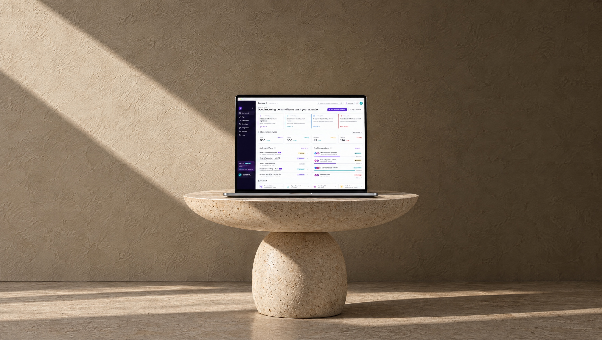
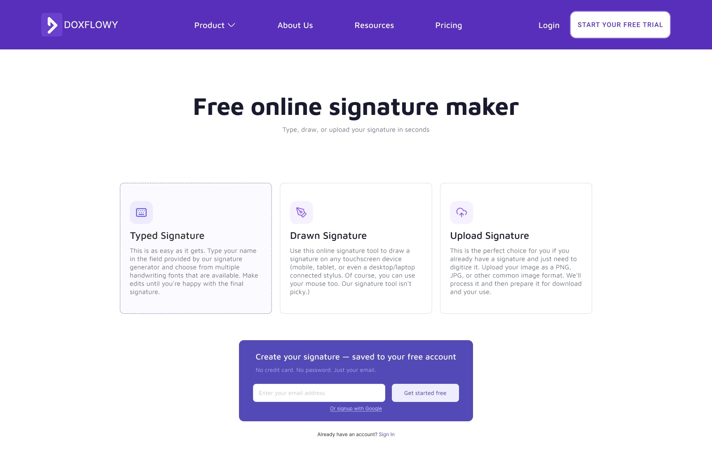
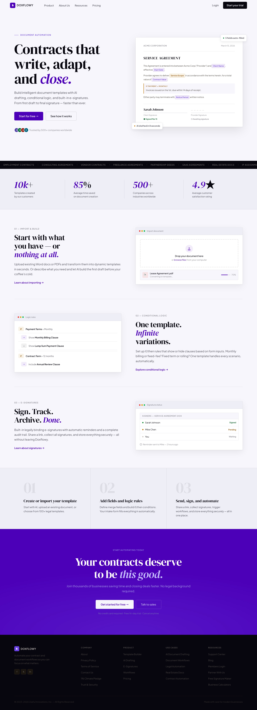
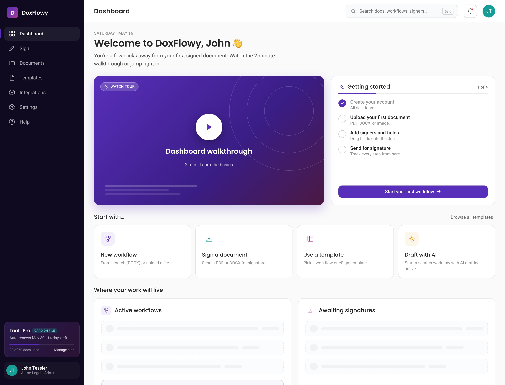
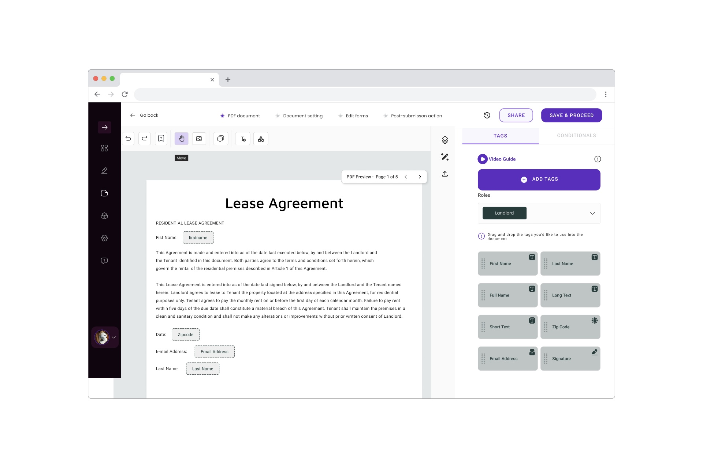
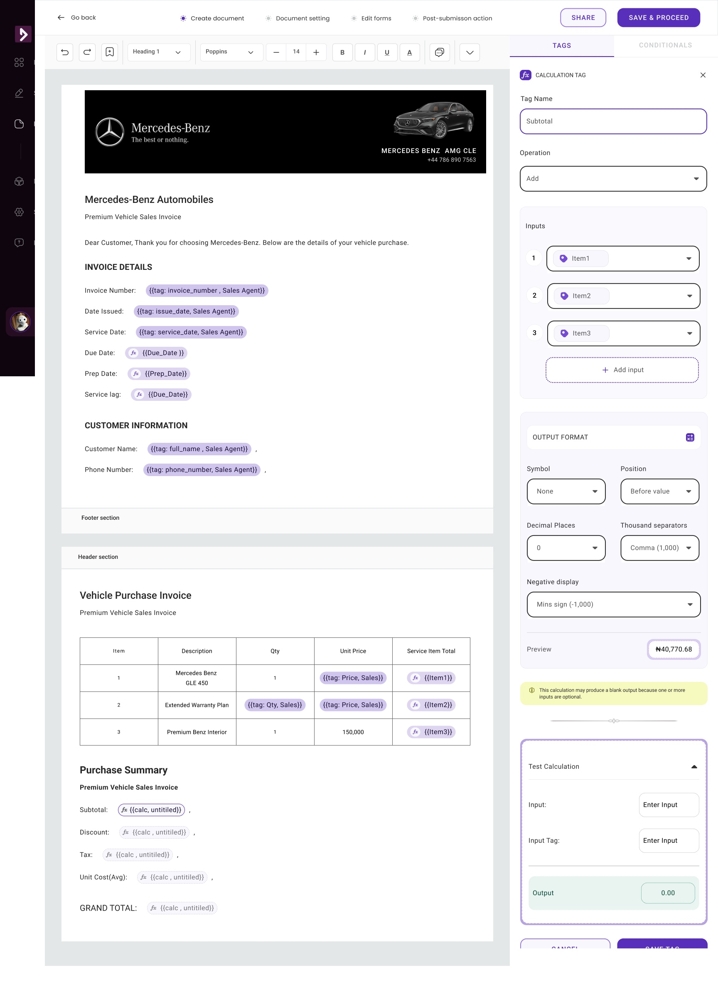
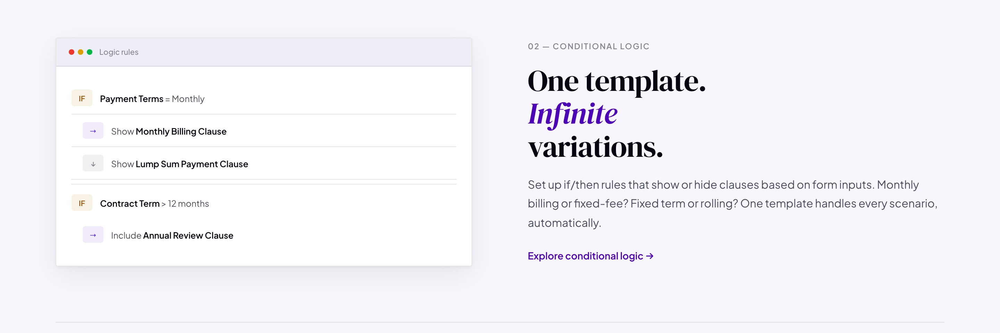
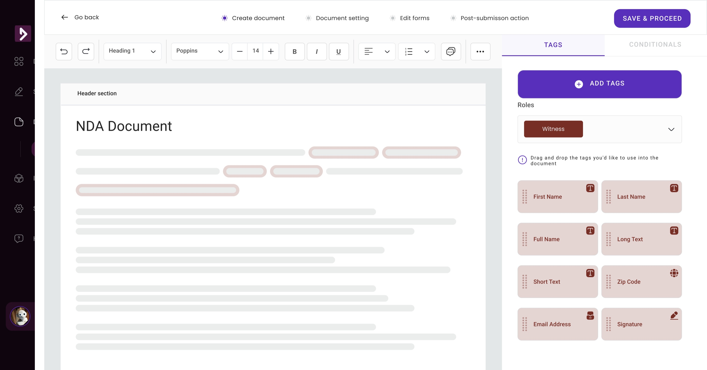

Doxflowy
Google was sending people. Doxflowy was letting them leave. I found the leak in the data and designed the product people would stay for.
- Role
- Product Designer, Useful Media
- Product
- Document automation and e-signature, B2B SaaS
- Platforms
- Web app and website, remote
- Visitors
- 78% first-time, mostly from Google

A small product in a room full of giants.
Doxflowy helps businesses create, automate and e-sign documents. Its competitors are DocuSign, PandaDoc and GoodDocs: big names with big budgets. Doxflowy’s way in was free tools, like a signature maker and free templates, that rank on Google.
It worked, people came. Then they downloaded the free template, and left. No email, no account, no way to bring them back.
Lots of traffic, very few sign-ups.
“I just need this contract done, today, without learning a new tool.”
People who download a template already trust us a little. Keep them.
Sign-ups from free tools, and time to a first document.
Every month, I watched what people actually did.
I ran monthly UX audits in Microsoft Clarity: heatmaps, session recordings, rage taps, dead clicks and scroll depth. I presented each one in the stakeholder standup, and each cycle turned into 10+ fixes for the sprint.
The May report told the story plainly. Most visitors were new, most came from Google, and the path ended at the download button.
- 01Google search
- 02Free tool or template
- 03Download
- 04Sign up
People were checking before they trusted. Recordings showed visitors opening About, Contact and Privacy before doing anything. A small brand has to earn trust on every page.
Things looked clickable and weren’t. Pricing feature rows and review cards drew taps that did nothing. Those were false affordances, and the dead clicks came from them.
And the site was slow. A performance score of 65 out of 100, and the main content took 13 seconds to appear. Rage taps clustered on screens that were still loading. This is what that wait feels like:
Largest Contentful Paint: 13s. Google treats anything over 4 seconds as poor. Most people won’t wait this long for a free template.
Keep the free tools free. Just ask for an email.
The free tools were bringing the right people, so I didn’t hide them. I redesigned the download moment instead: clearer calls to action, and an inline email field right on the card. “No credit card. No password. Just your email.”
That email became a new conversion funnel: email marketing and adverts bring downloaders back to sign up, people we used to lose for good.

Then I redesigned the website around it.
Clear about what Doxflowy does in one line, honest about what’s clickable, and built to answer the trust questions people were already asking.

What if onboarding asked who you are first?
A freelancer and a 100-person company don’t need the same first screen. So I made onboarding personal and progressive: a couple of friendly questions, with motion, and the answer changes the wording, the plan we suggest and the route into the product.
It was built so the team could A/B test the questions. Try it:
How big is your team?
We’ll set Doxflowy up around you.
An interactive sketch of the logic, rebuilt for this page. Tap a team size to see the route change.

Where onboarding lands: a welcome with a 2-minute walkthrough, a four-step checklist, and four ways to start. Time to a first document came down by about 30% (estimated).
Describe the document. The AI drafts it and adds the tags.
Setting up a template used to mean dragging every tag onto the page by hand: first name, date, signature, for every signer. I designed an AI document assistant from scratch to replace that. Type what you need, or upload any document, and it drafts it and drops in the tags and conditional logic for you, with inline suggestions and formatting controls.
Average setup time fell by 40%.

Before: pick a role, then drag First Name, Date, Email and Signature onto the page, one tag at a time, for every signer. After, below: say what you need, and the draft arrives with its tags, a calculation and a rule already in place.
SERVICE AGREEMENT
Drafted by Doxflowy AI
This Agreement is entered into between Acme Corp (“Provider”) and Client Name, effective Start Date.
Provider agrees to deliver Service Scope for a monthly fee of Contract Value, with a total of fx Total Due.
Either party may end this agreement with Notice Period written notice.
- Drafted 4 clauses
- Added 5 tags for the client to fill
- Added a calculation for the total
- Added a rule: monthly billing
A motion prototype of the assistant flow, rebuilt from my editor and website designs.
Tags that do the maths, and tags that make decisions.
Calculation tags are a new tag type I designed. They work out dates, prices and totals inside the document, and can feed into each other: a line total into a subtotal, a subtotal into the grand total. No one has to do the maths by hand, and you don’t need to be technical to set one up.
This is my prototype, live. Click the tags, change the operation, try the test panel, then open Form Fill and Final Document to see the numbers flow through.

In the product: name the tag, pick the operation, choose its inputs, set the output format (symbol, decimals, separators) and test it before you save.
Workflow tags add conditional steps and logic, so the right fields, approvals and actions appear for the right person. Monthly billing or a fixed fee, a 12-month term or rolling: one template handles each case. They cut document prep time by about 25% (estimated).

Signing a document, start to finish.
The flow people use most: start signing from the dashboard, say how you’re signing, add the signers, then drop signature fields where each person signs. A real recording of the product.
- Start signing
- How are you signing?
- Add signers
- Place the signature
A blank screen feels broken. So nothing loads blank.
Remember the 13 seconds, and the rage taps on screens that hadn’t loaded. While engineering worked on speed, I designed skeleton loaders and branded loading states for the core flows: the Doxflowy mark first, then the shape of the page, then the content. People can see something is happening, and where it will be.

The editor while a document loads: the page takes shape first, and the tags are ready to use straight away.
40%less setup time
with the AI document assistant, instead of tagging every field by hand.
Data in, decisions out, every month.
- Monthly Clarity UX audits
- Stakeholder standup reports
- Email-gated free tools and templates
- The website redesign
- Personal, progressive onboarding
- The AI document assistant
- Calculation and workflow tags
- Skeleton and branded loading states
Doxflowy can’t outspend DocuSign. It can be easier, quicker to start and smarter about the people it already has. That’s what I designed for.